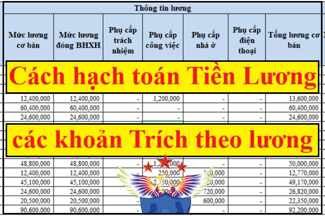

Hướng dẫn hạch toán tiền lương và các khoản trích theo lương theo Thông tư 133 và 99 như: Hạch toán bảo hiểm xã hội, BHYT, BHTN, kinh phí công đoàn, thuế thu nhập cá nhân; Hạch toán tiền thai sản ốm đau, cách hạch toán tiền tạm ứng lương...
- Hàng tháng kế toán tiền lương phải tính tiền lương và dựa vào Bảng tính lương đó kèm theo Phiếu chi lương cho nhân viên để hạch toán chi phí tiền lương và các khoản trích theo lương, cụ thể như sau:

Xem thêm: Mẫu bảng thanh toán tiền lương trên Excel
- Trong bảng tính lương sẽ phải liệt kê cụ thể các khoản như: Tiền lương, tiền thưởng, thuế TNCN, các khoản phụ cấp, các khoản trích theo lương như: BHXH, BHYT, BHTN, KPCĐ (tỷ lệ trích) ... để hạch toán, chi tiết từng bước như sau:
1. Hạch toán Khi tính lương cho nhân viên:
Nợ các TK 154, 241, 622, 623, 627, 641, 642 ...
(Tùy từng mục đích trả lương cho bộ phận nào như: Bộ phận quản lý, bộ phận bán hàng, bộ phận sản xuất..., Và DN bạn sử dụng theo Thông tư 133 hay Thông tư 99 mà các bạn hạch toán vào đó nhé.
Có TK 334
Ví dụ 1: Cũng là Chi phí nhân công sản xuất.
- Nếu theo Thông tư 99 thì hạch toán vào 622 => Nợ TK 622 / Có TK 334
- Nếu theo Thông tư 133 thì hạch toán vào 154 => Nợ TK 154 / Có TK 334
Ví dụ 2:
Công Kế toán Diệu Tâm áp dụng chế độ kế toán theo Thông tư 99. Trong tháng có nhân viên A: Đầu tháng làm ở bộ phận quản lý => Cuối tháng điều sang làm bộ phận sản xuất => Thì trong tháng đó sẽ phải tách lương cho nhân viên A để hạch toán, cụ thể như sau:
- Phần tiền lương đầu tháng làm ở bộ phận quản lý, hạch toán: Nợ TK 6421 / Có TK 334
- Phần tiền lương cuối tháng làm ở bộ phận sản xuất, hạch toán: Nợ TK 6271 / Có TK 334
Lưu ý: Việc lựa chọn chế độ kế toán theo Thông tư 133 hay 99 là tùy thuộc vào quy mô của Doanh nghiệp.
Chi tiết xem tại đây nhé: Tiêu chí xác định doanh nghiệp vừa và nhỏ.
---------------------------------------------------------------------------------------
2. Hạch toán các khoản Bảo hiểm xã hội:
- Hạch toán phần tính vào chi phí của DN:
Nợ TK: 154, 241, 622, 623, 627, 641, 642: Tiền lương tham gia BHXH x 23,5%
(Cũng tùy từng bộ phận và chế độ kế toán như trên phần 1 nhé)
Có TK 3383 – Bảo Hiểm Xã Hội: 17,5%
Có TK 3384 – Bảo Hiểm Y Tế: 3%
Có TK 3386 – Bảo Hiểm Thất nghiệp: 1% (Theo TT 99).
(Nếu theo Thông tư 133, BHTN là: 3385)
Có TK 3382 – Kinh phí công đoàn: 2%.
- Hạch toán phần trừ vào lương của Nhân viên:
Nợ TK 334: 10,5%
Có TK 3383 – Bảo Hiểm Xã Hội: 8%
Có TK 3384 – Bảo Hiểm Y Tế: 1,5%
Có TK 3386 – Bảo Hiểm Thất nghiệp: 1% (Theo TT 99).
(Nếu theo Thông tư 133 BHTN là: 3385)
Xem thêm: Tỷ lệ trích các khoản theo lương
Lưu ý:
- Các bạn phải phân biệt được Kinh phí công đoàn và Đoàn phí công đoàn nhé.
- Kế toán DN chỉ hạch toán Kinh phí công đoàn nhé => Còn Đoàn phí công đoàn thì không hạch toán vào sổ sách kế toán của DN, các bạn theo dõi nội bộ nhé.
Chi tiết xem tại đây: Quy định về kinh phí công đoàn và đoàn phí công đoàn.
---------------------------------------------------------------------------------------
3) Hạch toán Thuế TNCN cho người Lao Động (nếu có)
- Khi khấu trừ thuế TNCN phải nộp của nhân viên: (Chỉ hạch toán những nhân viên phải nộp thuế thuế TNCN nhé)
Nợ TK 334: Số thuế TNCN khấu trừ
Có TK 3335
- Khi nộp tiền thuế TNCN: (Phải có Giấy nộp tiền vào ngân sách)
Nợ TK 3335
Có TK 111, 112
Xem thêm: Cách tính thuế TNCN
----------------------------------------------------------------------------------------------
4) Hạch toán nộp tiền BHXH, BHYT, BHTN, KPCĐ:
Chú ý: Khi nào DN đã nộp tiền => Tức là đã có giấy nộp tiền cho cơ quan BHXH và Liên đoàn Lao động Quận (Huyện) thì mới được hạch toán nhé:
Nợ TK 3383: 25,5% (Nộp cho cơ quan BHXH).
Nợ TK 3384: 4,5%
Nợ TK 3386 : 2% (Nếu theo TT 99)
(Nếu theo Thông tư 133 BHTN là: 3385)
Nợ TK 3382: 2% (Nộp cho Liên đoàn Lao động Quận (Huyện)).
Có TK 1111/ TK 1121: Tổng 34%
Xem thêm: Thủ tục đăng ký tham gia BHXH
--------------------------------------------------------------------------------------
5) Hạch toán chi trả Lương cho Công nhân viên:
- Khi trả lương cho nhân viên:
Nợ TK 334
Có TK 111, 112
- Nếu Nhân viên ứng trước lương:
Nợ TK 334.
Có TK 111, 112
----------------------------------------------------------------------------------------
6. Hạch toán tiền chế độ thai sản, ốm đau...
- Khi tính số tiền chế độ thai sản, ốm đau phải trả cho người lao động:
Có TK 334
- Khi nhận được tiền của cơ quan BHXH chuyển về Doanh nghiệp:
Nợ TK 111, 112
Có TK 3383
- Khi trả tiền chế độ thai sản, ốm đau cho nhân viên:
Nợ TK 334
Có TK 111, 112
-----------------------------------------------------------------------------------------
Chúc các bạn làm tốt công việc!
Các bạn muốn được tìm hiểu rõ hơn và học cách lập báo cáo tài chính, báo cáo quyết toán thuế trên phần mềm bằng chứng từ thực tế...
có thể tham gia: Lớp học thực hành kế toán tổng hợp
------------------------------------------------------------